拖放卡片、連線標註、一鍵匯出 A3 印刷指示圖。每個功能附操作示範。
從左側零件清單按住卡片，拖到中間頁面放開
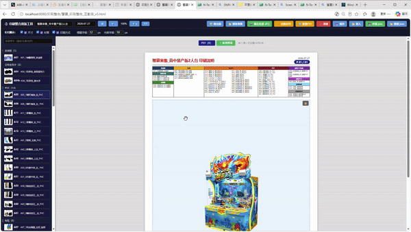
直接拖曳到想要的位置，接近其他卡片會自動吸附對齊
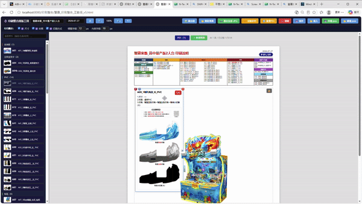
拖曳卡片右下角的藍色方塊，自由調整寬度和高度
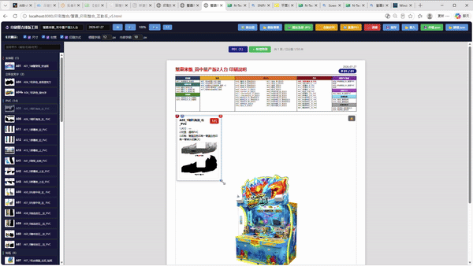
滑鼠移到卡片上 → 右上角出現 × → 點擊刪除
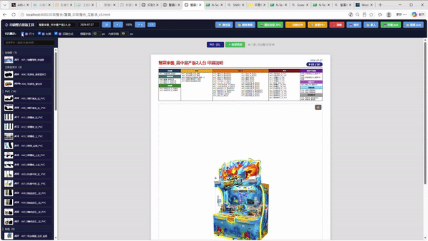
工具列 🔍+/- 按鈕，或 Ctrl + 滾輪（50%~150%）
「＋ 新增頁面」建立新頁，點 P01/P02 標籤切換
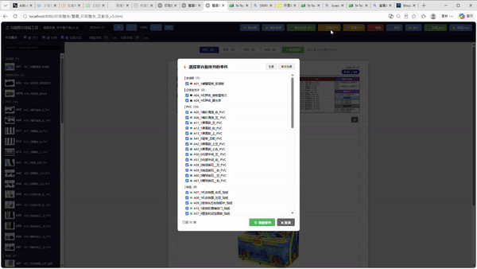
⚡ 自動排列 → 勾選零件 → 確認，沿頁面四邊排列
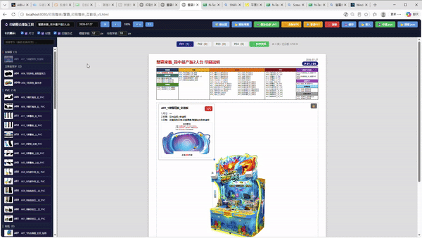
雙擊卡片圖片 → 拖曳裁切框選區域 → 確認裁切
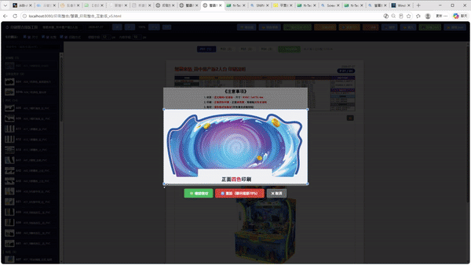
hover → ✏️ → 修改名稱/數量/尺寸/材質/印刷方式
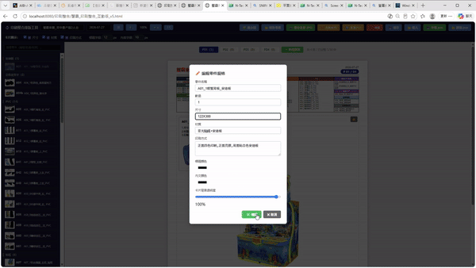
✏️ 面板中選「標題顏色」或「內文顏色」色票
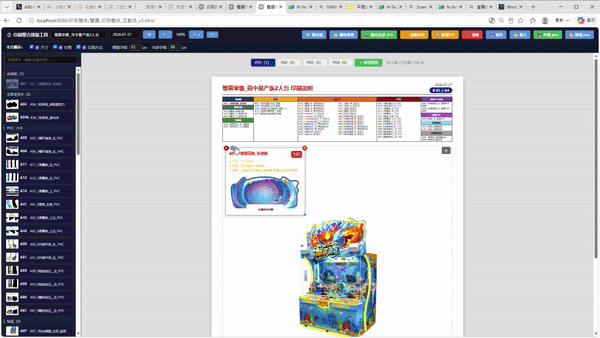
✏️ 面板拖曳透明度滑桿（0%~100%）
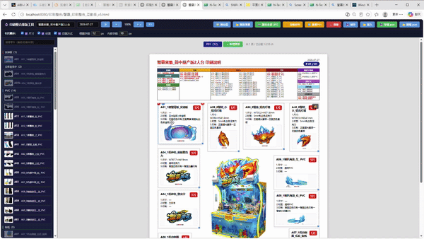
hover → 🎯 → 點擊機台圖上對應位置 → 紅線連接
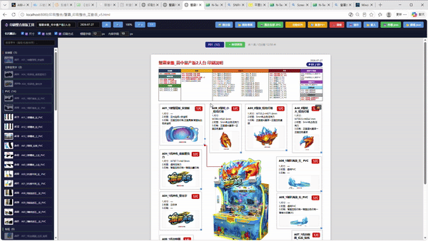
A* 演算法自動繞過其他卡片，只走 90° 直角
移動卡片後紅線自動重新計算最佳路徑
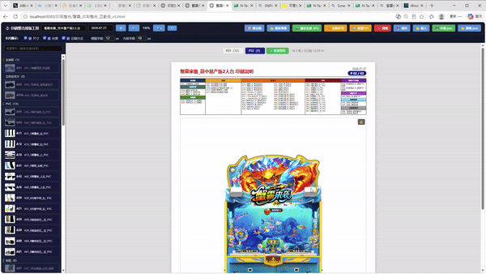
工具列 🖼️ 按鈕 → 選圖片上傳（每頁可用不同圖）
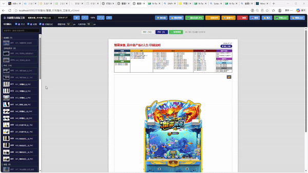
🔓 解鎖 → 拖曳移動/滾輪縮放 → 🔒 鎖定防誤觸
📷 匯出全部 → 每頁一張 A3 @300dpi JPG
💾 存檔.json → 排版下載到電腦，不怕遺失
📂 讀檔.json → 選之前存的檔案 → 完整恢復
Ctrl+Z 或 ↩️ 按鈕，每按一次回一步（最多 20 步）
那是伺服器，關掉後工具無法載入圖片和匯出
同一時間只能開一個（佔用 port 8080），要切換請先關再開
瀏覽器關掉或清緩存可能遺失排版，請常用「💾 存檔.json」
所有程式都在資料夾裡，雙擊 .bat 即可使用，可複製到 USB